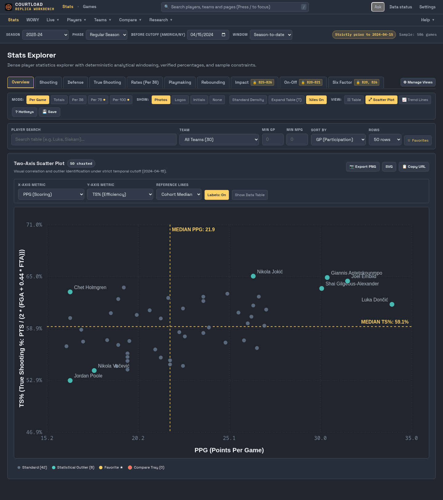

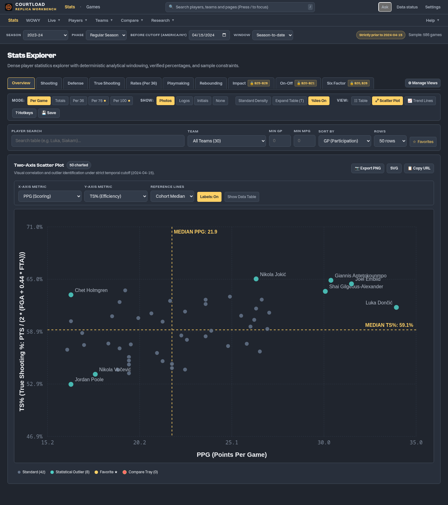

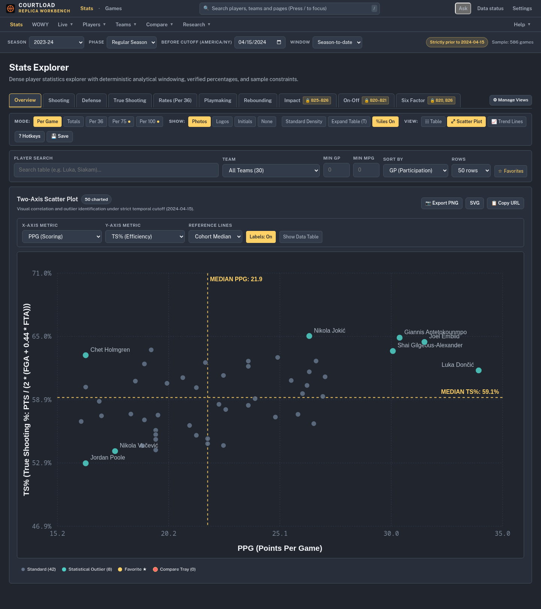

Real retained data, same density and colors. Click images for full resolution. Application fonts remain unchanged. Screenshots contain rendered text only; no font binaries are distributed.
Measurements and source hashes
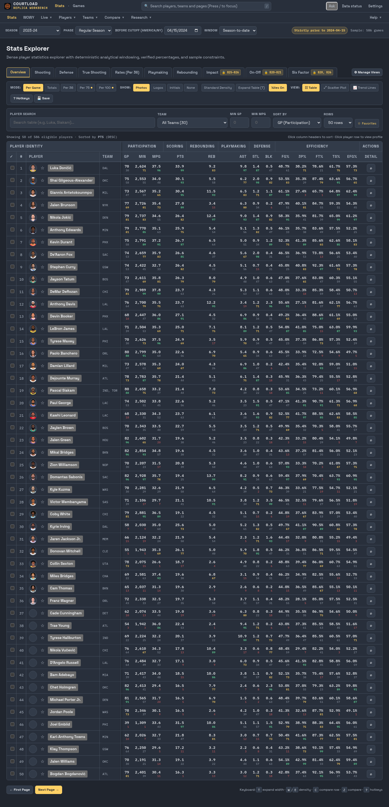
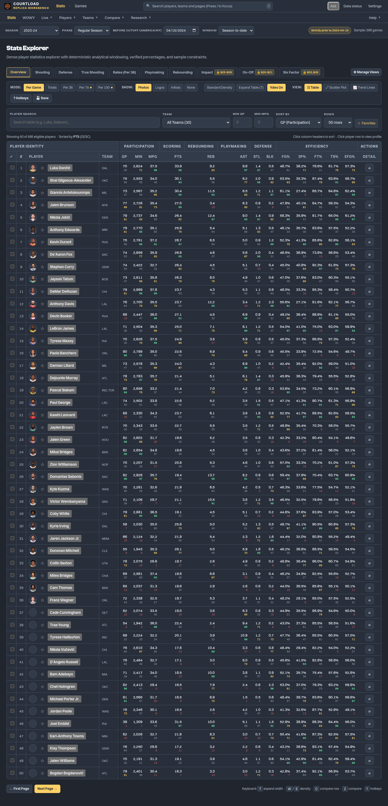
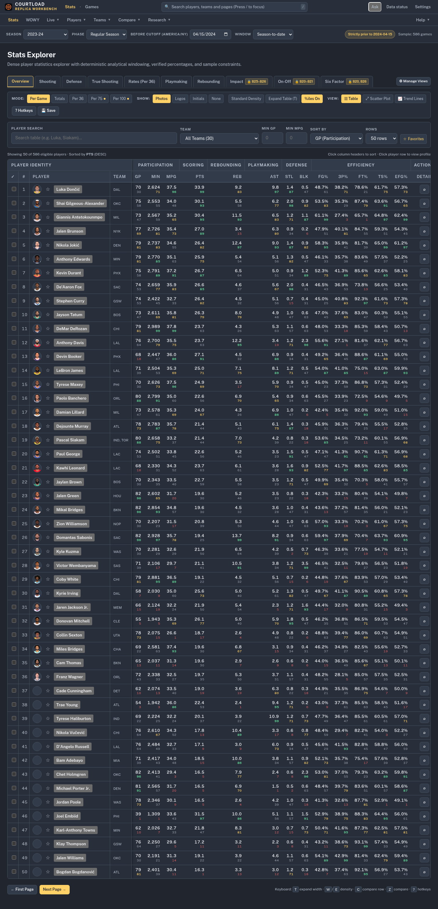
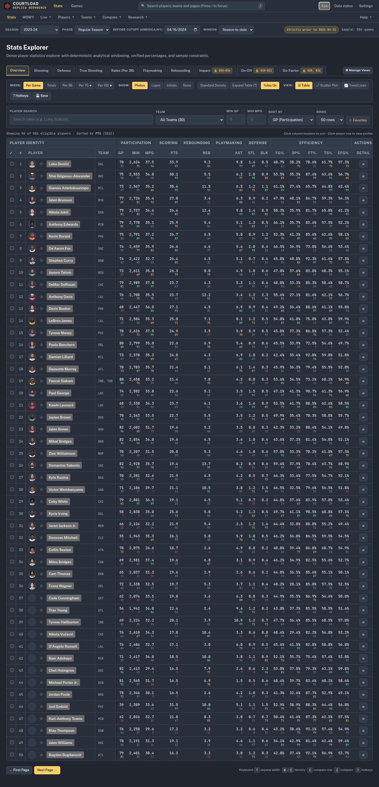



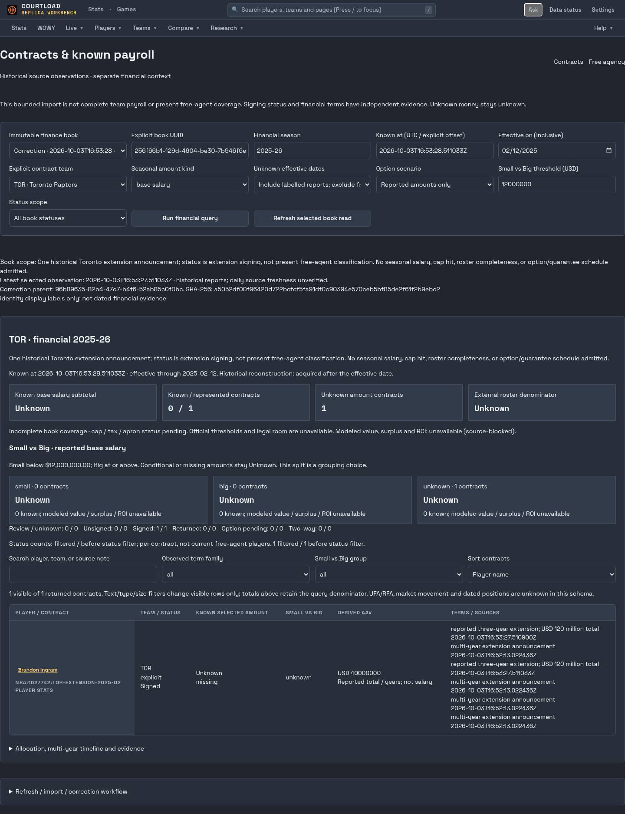
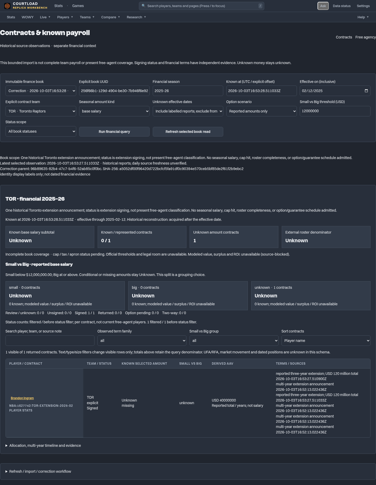
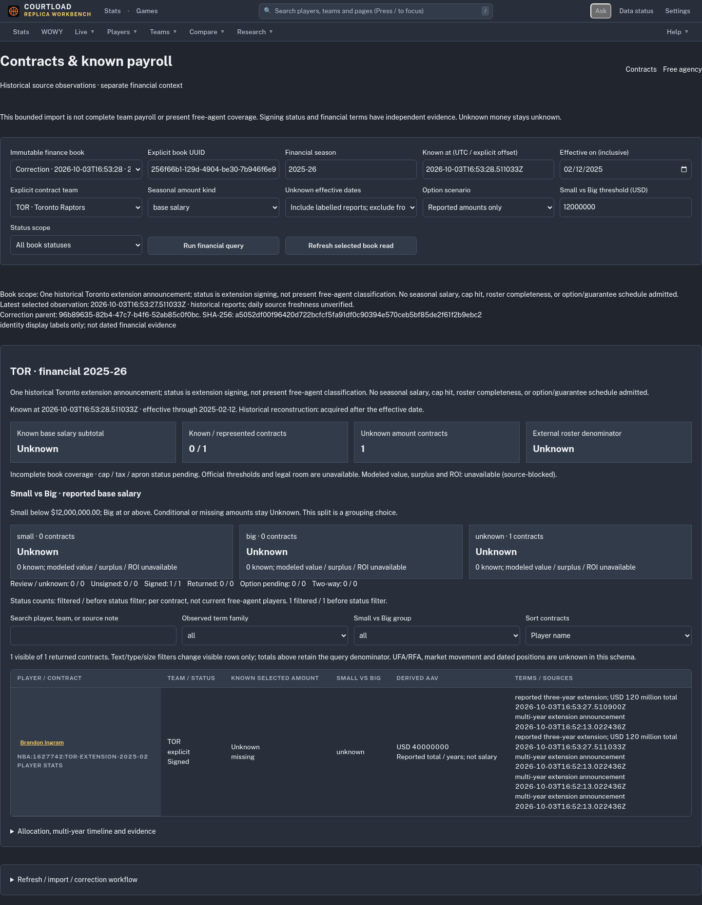

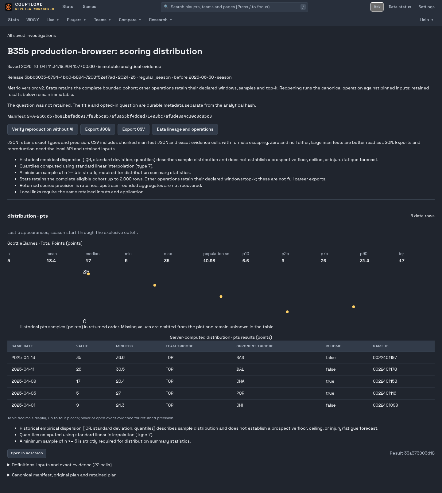
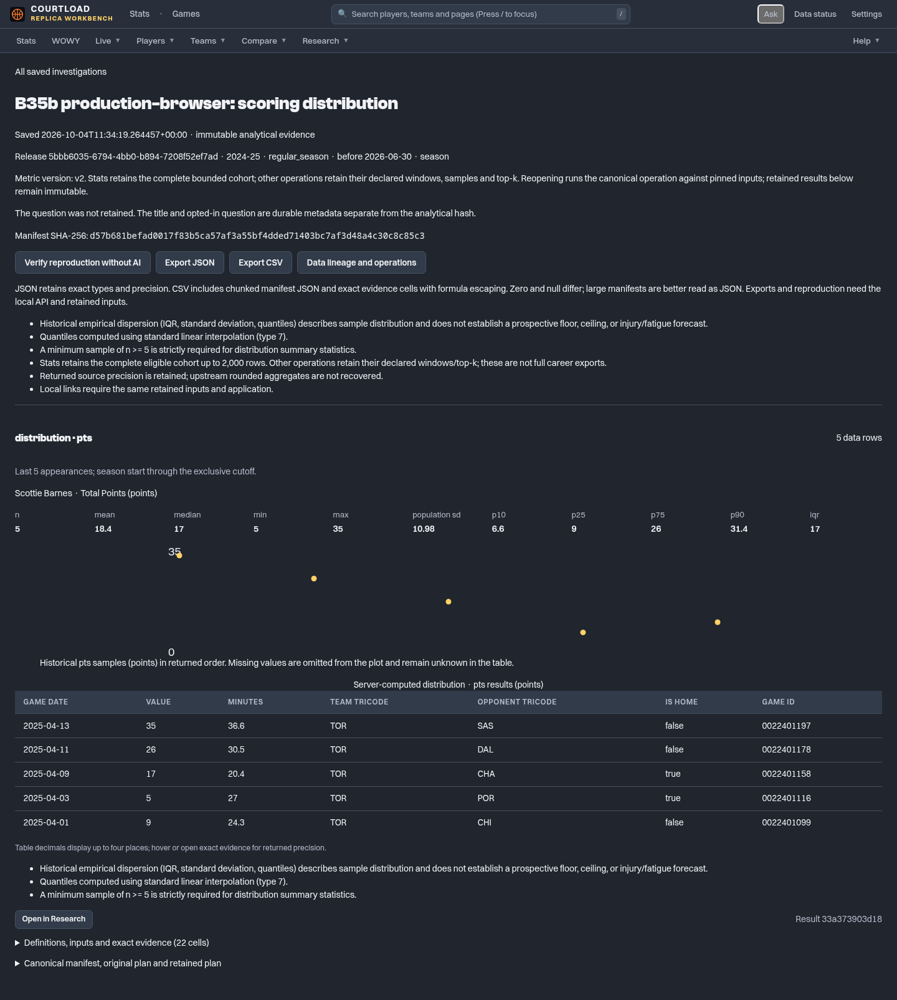
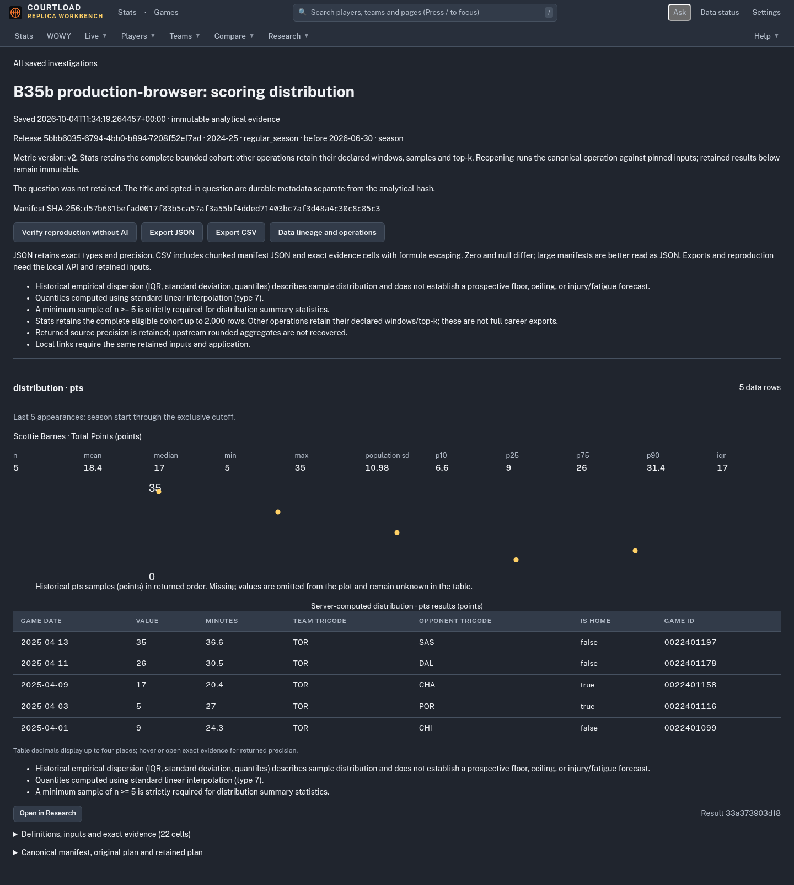